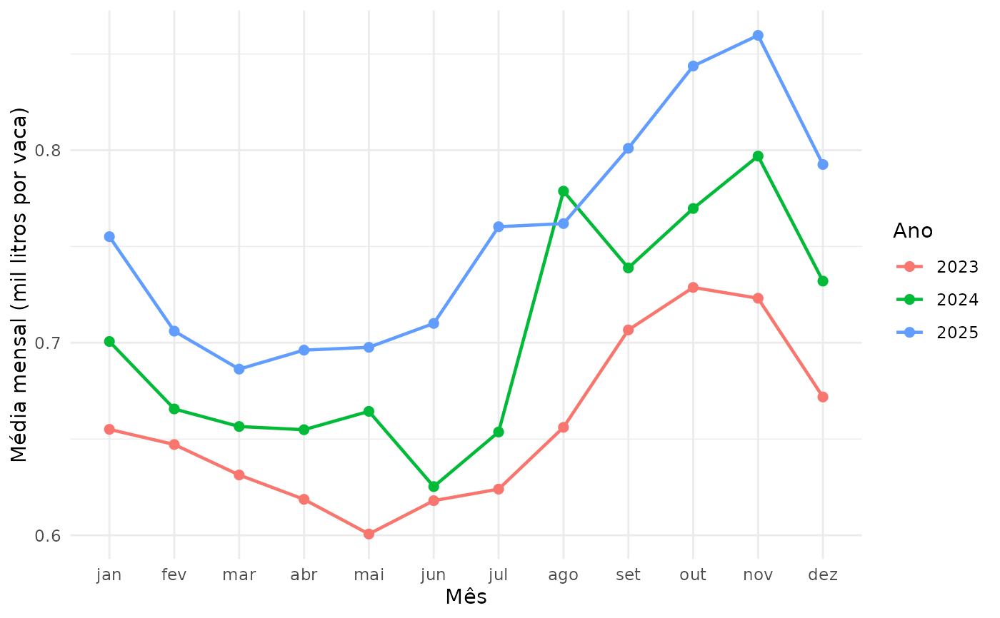

A tabela arrumada devolvida por arrumar_dados(), e o conjunto de dados
leite_fazendas, têm a classe leitecoop seguida das classes do
tibble, de modo que continuam sendo um tibble. A classe tem três
métodos:
Valor
O print() devolve x, de forma invisível. O summary()
devolve um tibble com uma linha por ano e as colunas ano,
unidades, linhas, meses_sem_registro e soma (mil litros). O
plot() desenha o gráfico e devolve, de forma invisível, o objeto do
ggplot2. Uma tabela sem as colunas necessárias produz, no
summary() e no plot(), um erro da classe leitecoop_erro_colunas.
Detalhes
print()escreve uma linha de resumo, com o número de fazendas, de anos e de meses sem registro, e passa aoprint()dotibblecom oNextMethod();summary()devolve a conferência por ano, a ser comparada com oLEIA-ME.txt: fazendas com medição, linhas, meses sem registro e soma dos valores registrados;plot()desenha a sazonalidade, comgrafico_sazonal().
Exemplos
leite_fazendas
#> Leite de 10 fazendas em 3 anos (2023 a 2025), com 9 meses sem registro
#> # A tibble: 360 × 9
#> origem ano codigo mes leite nome sistema vacas litros_por_vaca
#> <chr> <int> <chr> <fct> <dbl> <chr> <chr> <dbl> <dbl>
#> 1 leite_2023.csv 2023 FZ02 jan 190. Fazend… Pasto 371 0.512
#> 2 leite_2023.csv 2023 FZ02 fev 182. Fazend… Pasto 371 0.490
#> 3 leite_2023.csv 2023 FZ02 mar 202 Fazend… Pasto 371 0.544
#> 4 leite_2023.csv 2023 FZ02 abr 168 Fazend… Pasto 371 0.453
#> 5 leite_2023.csv 2023 FZ02 mai 164. Fazend… Pasto 371 0.443
#> 6 leite_2023.csv 2023 FZ02 jun 198. Fazend… Pasto 371 0.535
#> 7 leite_2023.csv 2023 FZ02 jul 206. Fazend… Pasto 371 0.554
#> 8 leite_2023.csv 2023 FZ02 ago 226. Fazend… Pasto 371 0.609
#> 9 leite_2023.csv 2023 FZ02 set 220. Fazend… Pasto 371 0.592
#> 10 leite_2023.csv 2023 FZ02 out 224. Fazend… Pasto 371 0.602
#> # ℹ 350 more rows
summary(leite_fazendas)
#> # A tibble: 3 × 5
#> ano unidades linhas meses_sem_registro soma
#> <int> <int> <int> <int> <dbl>
#> 1 2023 10 120 2 18870.
#> 2 2024 10 120 5 19673.
#> 3 2025 10 120 2 21661
plot(leite_fazendas)

# Uma seleção de linhas continua sendo da classe
pasto <- leite_fazendas[leite_fazendas$sistema == "Pasto", ]
class(pasto)
#> [1] "leitecoop" "tbl_df" "tbl" "data.frame"
pasto
#> Leite de 3 fazendas em 3 anos (2023 a 2025), com 3 meses sem registro
#> # A tibble: 108 × 9
#> origem ano codigo mes leite nome sistema vacas litros_por_vaca
#> <chr> <int> <chr> <fct> <dbl> <chr> <chr> <dbl> <dbl>
#> 1 leite_2023.csv 2023 FZ02 jan 190. Fazend… Pasto 371 0.512
#> 2 leite_2023.csv 2023 FZ02 fev 182. Fazend… Pasto 371 0.490
#> 3 leite_2023.csv 2023 FZ02 mar 202 Fazend… Pasto 371 0.544
#> 4 leite_2023.csv 2023 FZ02 abr 168 Fazend… Pasto 371 0.453
#> 5 leite_2023.csv 2023 FZ02 mai 164. Fazend… Pasto 371 0.443
#> 6 leite_2023.csv 2023 FZ02 jun 198. Fazend… Pasto 371 0.535
#> 7 leite_2023.csv 2023 FZ02 jul 206. Fazend… Pasto 371 0.554
#> 8 leite_2023.csv 2023 FZ02 ago 226. Fazend… Pasto 371 0.609
#> 9 leite_2023.csv 2023 FZ02 set 220. Fazend… Pasto 371 0.592
#> 10 leite_2023.csv 2023 FZ02 out 224. Fazend… Pasto 371 0.602
#> # ℹ 98 more rows